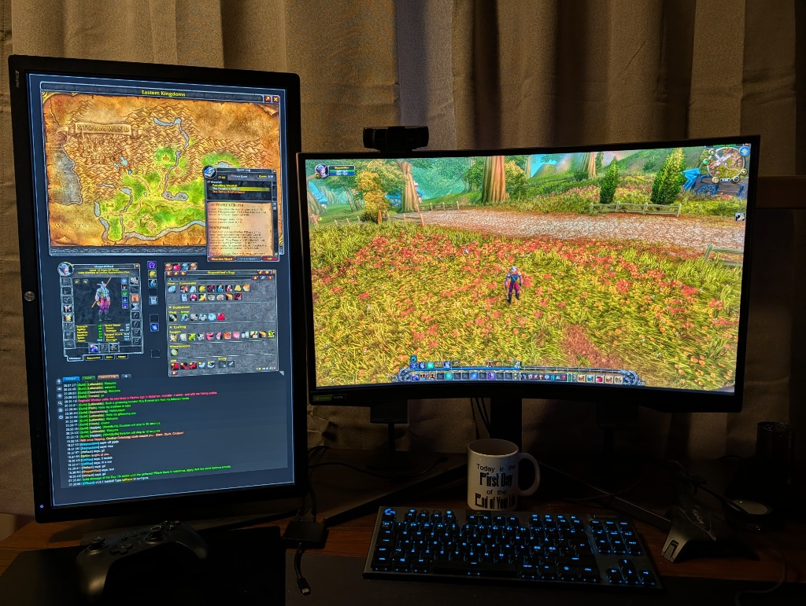
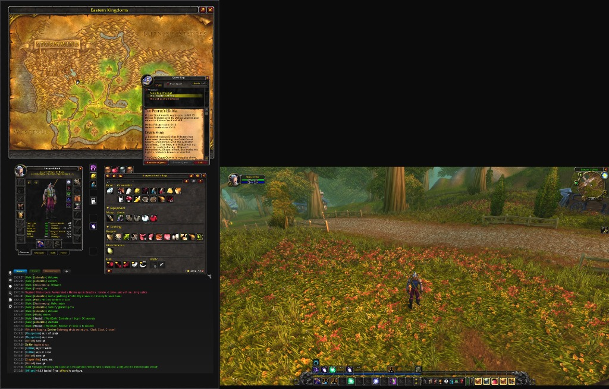
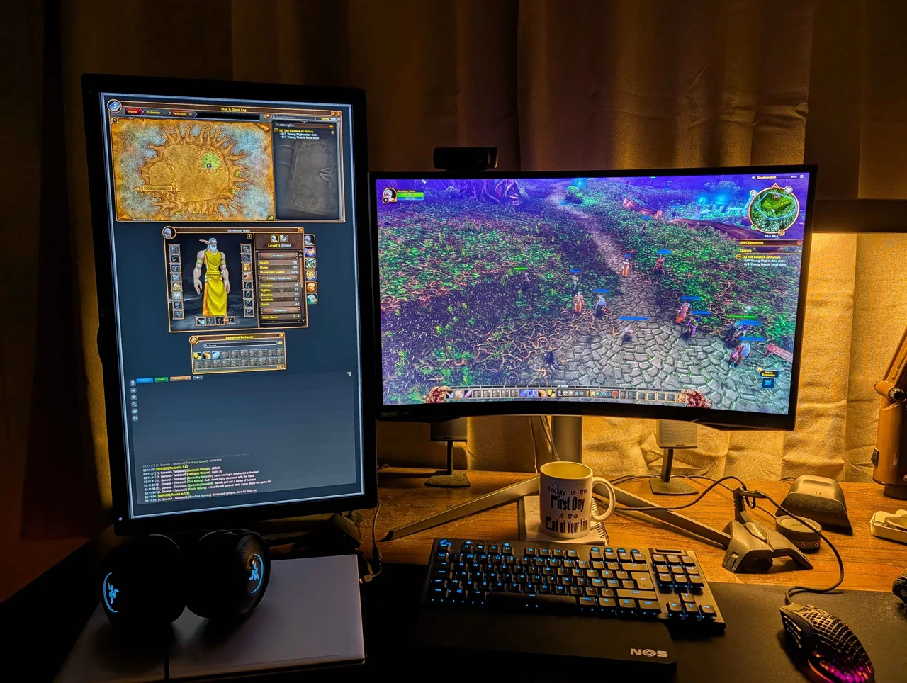
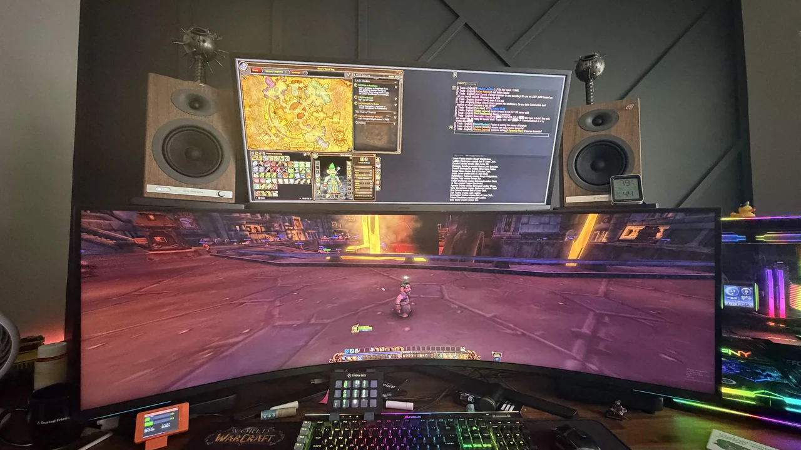
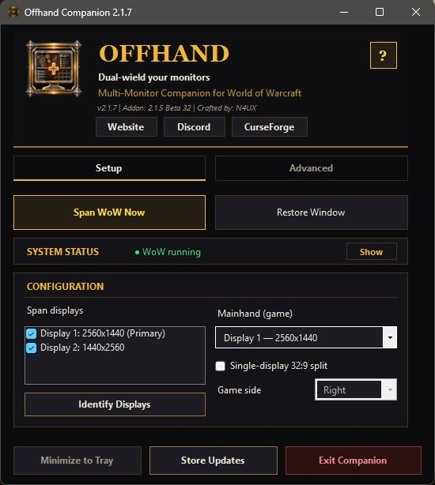
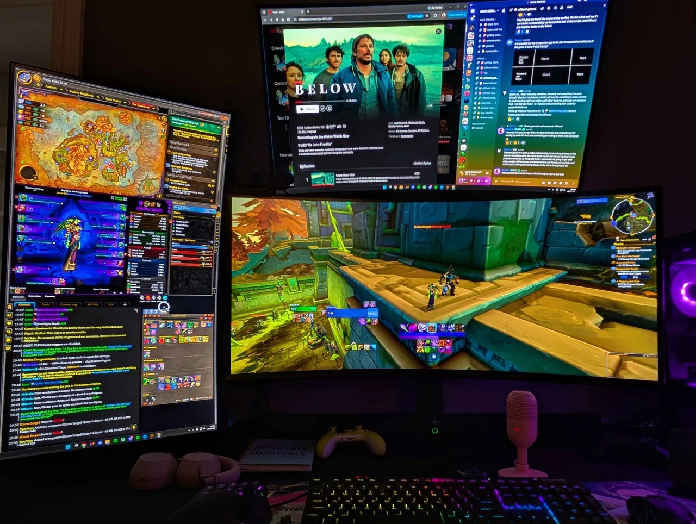

Join Discord
Join DiscordCompanion
Recommended for Windows
Use both full monitors, or share your second monitor with Discord or a browser using a custom workspace.
Use Companion
Equip your Offhand. Dual wield your monitors.
 Watch Offhand in action30-second in-game demo
Watch Offhand in action30-second in-game demo
WoW was built for one screen. If you've ever tried stretching it across two, you know the pain: your character is split by the bezel, and your bags open on the wrong monitor. Offhand fixes this by keeping your game on your Mainhand Monitor, and moving your map, bags, and UI panels out of the way onto your Offhand Monitor.


The black area in the raw capture is desktop space with no physical monitor.
Keep your world map, bags, and character sheet open on your second screen without cluttering your game view. They stay open even while you're moving around the world.
Play on your main screen with a perfectly centered character and combat HUD, exactly how you're used to playing. No weird camera stretching or misplaced action bars.
Designed specifically for WoW players running dual monitors, whether matching screens or asymmetrical portrait + landscape.

Keep the world view on your main display when the game window spans both monitors.
The in-game wizard checks placement, seam and scale. On clients with compatible Edit Mode controls, it also offers to create a Mainhand HUD layout.
Leave supported windows such as your map, bags and character sheet open while you move.

Choose which display holds the game when one screen is taller, rotated or mounted above the other.

Use Companion on Windows, snap WoW into a FancyZones zone, or drag the window into place yourself.

Use a custom workspace to keep part of a monitor available for chat, video or other desktop apps.
Install the addon, choose one way to place WoW, then finish the guide inside the game.
Install Offhand with CurseForge or WowUp for the WoW client you play. Check supported clients.
Open the AddOns list at character selection and enable Offhand. Enter the world and type /offhand guide to open setup.
Open the client folder you actually launch. Extract the Offhand folder into Interface/AddOns. The main addon’s TOC files should sit directly inside Interface/AddOns/Offhand. A path like Offhand/Offhand/Offhand.toc is one folder too deep. Restart WoW and check the AddOns list again.
For most Windows setups, choose Companion. If you prefer PowerToys or want to place the window yourself, choose one of the alternatives.
Recommended for Windows
Use both full monitors, or share your second monitor with Discord or a browser using a custom workspace.
Use CompanionAlternative using Microsoft PowerToys
Use a saved PowerToys zone when both monitors use the same Windows display scaling percentage. Companion is not needed for this method.
Use FancyZonesFor Mac or setup without a desktop utility
Drag and resize WoW yourself. You may need to repeat that placement after launching the game.
Set up manuallyOn a Mac? Follow the macOS setup steps. Using Linux/Wine? Read the Linux setup guide before using the Companion 2.1.5 portable ZIP.
Once WoW covers the screens you chose, return to the open in-game guide. Follow its prompts to reload, confirm which screen holds your game, and finish setup.
Start with the standard layout. You can explore custom workspaces, background images and additional settings later. These are not extra setup methods or required first-run steps.
The Microsoft Store Companion is the recommended Windows tool for positioning WoW. Standard layout is already selected for a new setup. Choose your screens in Setup, then confirm the layout in the WoW guide.
Two full monitors need no custom editor. To keep desktop apps alongside your WoW panels, reserve part of the second screen.
Choose a PNG, JPEG, or WebP image, preview fill and fit behavior, and download a ready-to-install Offhand_UserMedia package. After installation and a full client restart, enable it from Offhand's Appearance tab.
The image is processed in your browser. It is not uploaded, retained, or sent to Offhand. The generated package contains a texture and declarative metadata, with no Lua or executable program code. It remains separate from the CurseForge-managed addon so normal updates cannot replace your background.
Direct answers to common questions about safety, compatibility, and setup.
In WoW's Graphics options, select Windowed and apply. Windowed (Fullscreen) is different. See the Windowed mode screen and continue to placement.
Where supported, the calibration wizard finishes with Create Mainhand HUD Layout. Reload when prompted, then use Blizzard Edit Mode for personal adjustments. Follow the calibration instructions; the HUD reference covers later changes. Custom action-bar addons retain ownership of their frames.
No. Offhand uses native Blizzard viewport coordinate APIs to constrain 3D camera rendering strictly to your primary monitor's pixel bounds. Your camera aspect ratio and field of view remain native 1:1, completely eliminating horizontal fisheye distortion.
No. Microsoft PowerToys FancyZones and ordinary manual resizing are complete standalone setup paths. Offhand remembers and validates the resulting canvas without communicating with another application. The optional Companion provides exact topology, borderless geometry, automatic spanning, and active recovery, but it may be exited after applying the span. Its Forever recovery bridge is only a compatibility fallback when /offhand diag reports that normal persistence is stale.
Yes. Offhand includes built-in support for packages created by the Background Studio. The studio converts PNG, JPEG, or WebP images locally in your browser and creates a separate, code-free Offhand_UserMedia addon folder. Your image is not uploaded. Install both folders side by side, then enable Use installed custom background from the in-game Appearance tab. Keeping the media folder separate also prevents CurseForge updates from replacing your personal background.
Yes. FancyZones and manual placement use the canvas you confirm during setup, including portrait, landscape, mixed-resolution, stacked, and ultrawide arrangements. The optional Companion additionally passes the exact Windows rectangles for the selected Mainhand and workspace displays, including negative coordinates and unequal alignment.
For one super-ultrawide, select only it in the Companion, enable Single-display 32:9 split, and choose which half contains the game. For a 32:9 game screen plus a separate workspace screen, leave split mode disabled, select both displays, and choose the 32:9 display as Mainhand (game).
Offhand rejects mismatched saved geometry and restores a safe full-window viewport. With FancyZones or manual placement, restore the intended window before reapplying the remembered canvas. The Companion also remembers displays by Windows identity, refuses to collapse a two-display profile onto the remaining screen, and can restore a bordered Mainhand window while active.
Blizzard makes account enforcement decisions. Read Blizzard rules, bans and account risk for the project’s current guidance and official sources. You can use manual placement with the addon alone.
Offhand supports WoW Forever (1.60.x), Retail, Classic Era and Hardcore, and progression/Anniversary Classic clients. Forever has a distinct Mainline-style UI and therefore uses Blizzard Edit Mode for protected action bars and combat frames.
Forever protects action bars, unit frames, and other combat UI. Offhand can safely restore ordinary workspace panels such as the map, character frame, backpack, and chat, but protected frames must remain owned by Blizzard Edit Mode. The setup wizard therefore creates and selects a Mainhand-safe Blizzard layout through its final player-click action. Use Blizzard Edit Mode for personal fine-tuning, and use Recovery & Preview to rebuild or designate the layout later.